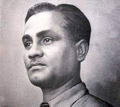
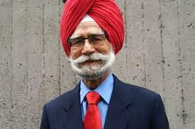
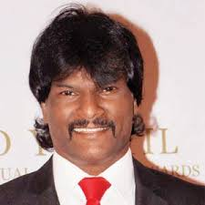
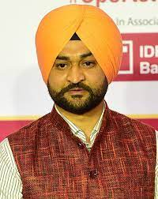

HOCKY PLAYERS
DHAYAN CHAND

Dhyan Chand was born on August 29, 1905, in Allahabad (now Prayagraj), Uttar Pradesh, India. He came from a family with a strong sporting background, and his father was in the British Indian Army.
Dhyan Chand's hockey journey began when he joined the Indian Army at a young age. He quickly gained recognition for his exceptional skills on the field, particularly his extraordinary goal-scoring abilities and impeccable ball control.
Chand made his debut in international hockey during the 1928 Amsterdam Olympics, where he led the Indian team to its first Olympic gold medal. Over the course of his career, he represented India in three Olympics (1928, 1932, and 1936) and won gold medals in all of them. Dhyan Chand played a pivotal role in India's success during the golden era of Indian hockey.
Achivement and Awards:
1.Three Olympic Gold Medals
2. Padma Bhushan
3. Bharat Ratna Recommendation
He was known for his incredible dribbling skills, which earned him the nickname "The Wizard." His ball control and ability to maneuver past defenders with ease were awe-inspiring. Dhyan Chand's performances on the field were so mesmerizing that even opposing teams and spectators admired his skills.
Dhyan Chand's legacy in the world of hockey is unparalleled, and he remains an inspiration for generations of athletes. His contributions to Indian sports and hockey's global prominence have left an indelible mark on the sport's history.
BALBIR SINGH SR

Balbir Singh Sr. was born on December 31, 1924, in Haripur Khalsa, Punjab, India. He started playing hockey at a young age and quickly rose through the ranks due to his exceptional goal-scoring abilities and incredible skills on the field.
He made his debut in international hockey in the late 1940s and became an integral part of the Indian hockey team during the 1948 London Olympics. Balbir Singh Sr. made history during the tournament by scoring a record-breaking 9 goals in the final against Great Britain, leading India to its first Olympic gold medal as an independent nation.
Achivement and Awards:
1. Three Olympic Gold Medals
2. Padma Shri
3. Padma Bhushan
Balbir Singh Sr.'s goal-scoring prowess, dedication, and leadership on the field made him one of India's greatest hockey players. He was known for his powerful shots and excellent understanding of the game. Even after retiring from playing, Balbir Singh Sr. continued to contribute to the sport as a coach and mentor, nurturing young talents and inspiring generations of hockey players in India.
Balbir Singh Sr. passed away on May 25, 2020, leaving behind a legacy that continues to inspire and uplift Indian hockey players and fans around the world.
DHANRAJ PILLAY

Dhanraj Pillay was born on July 16, 1968, in Khadki, Maharashtra, India. He grew up with a passion for hockey and started playing the sport at a young age. Pillay's exceptional skills and determination quickly caught the attention of hockey enthusiasts and selectors.
He made his international debut for the Indian hockey team in the late 1980s and went on to become one of India's most revered players. Dhanraj Pillay's playing style was characterized by his speed, dribbling abilities, and flair on the field.
Achivement and Awards:
1. Arjuna Award
2. Padma Shri
3. Rajiv Gandhi Khel Ratna
Dhanraj Pillay's incredible playing career and numerous achievements have left a lasting impact on Indian hockey. His dedication to the sport and his never-give-up attitude have inspired countless aspiring hockey players in the country.
Beyond his playing career, Pillay continued to contribute to the sport as a coach and administrator. He remains a respected and beloved figure in the Indian sports community and continues to promote and support hockey's growth in the country.
SANDEEP SINGH

Sandeep Singh was born on February 27, 1986, in Shahabad Markanda, Haryana, India. He came from a family with a hockey background, and his elder brother Bikramjeet Singh was also a professional hockey player.
Sandeep's journey in hockey began at a young age, and he quickly rose through the ranks due to his exceptional drag-flicking skills. He played as a defender and was known for his powerful drag-flicks, accuracy, and goal-scoring abilities.
Achivement and Awardsrd
1. Arjuna Award
2. Padma Shri
3. Sultan Azlan Shah Cup
4. FIH Men's World Cup
Sandeep Singh's inspiring story of overcoming adversity and returning to the sport after an unfortunate incident in 2006, when he was accidentally shot by a stray bullet, further added to his legend. His determination and resilience made him a beloved figure in Indian hockey and a source of inspiration for many aspiring athletes.
After his retirement from international hockey in 2018, Sandeep Singh continued to be associated with the sport as a coach and mentor. He remains an influential figure in Indian hockey and continues to promote and support the game's development in the countr